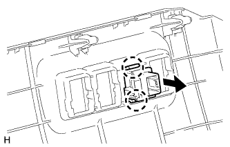

VSC OFF SWITCH > INSTALLATION |
| 1. INSTALL VSC OFF SWITCH |
|  |
Attach the 2 claws to install the VSC OFF switch to the lower instrument panel finish panel.
| 2. INSTALL LOWER INSTRUMENT PANEL FINISH PANEL SUB-ASSEMBLY |
Connect each connector and cable.
Attach the 13 clips and 2 guides to install the lower instrument panel finish panel.
Install the 2 bolts <C>.
Attach the 2 claws to close the cover.
| 3. INSTALL COWL SIDE TRIM BOARD LH |
Attach the clip and claw to install the cowl side trim board.
Install the clip.
| 4. INSTALL DOOR SCUFF PLATE ASSEMBLY LH |
Connect the connector.
Attach the 4 clips, 10 claws and 2 guides to install the door scuff plate.